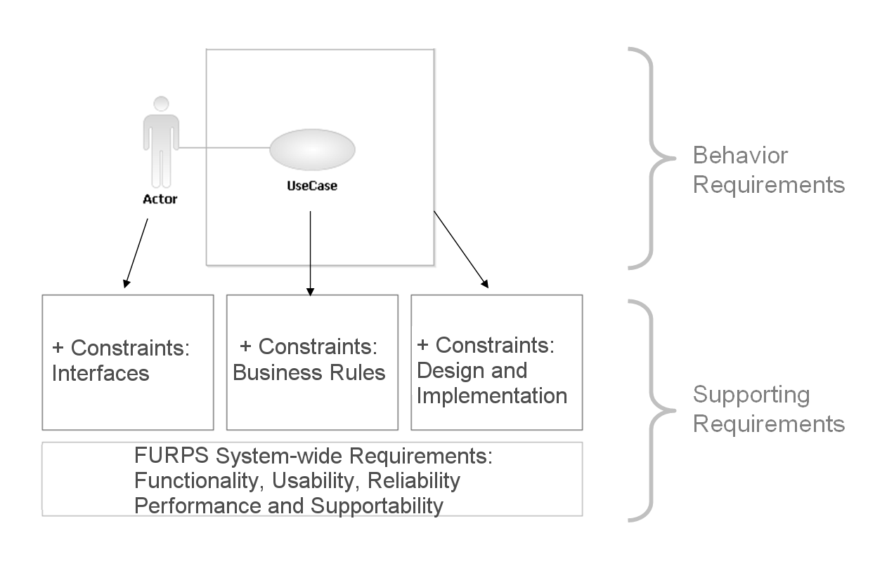

| Artifact: Supporting Requirements Specification |
 |
|
| Roles | Responsible: | Modified By: |
|---|---|---|
| Tasks | Input To:
| Output From: |
| Main Description | Supporting Requirements and Use Cases, together, define the system requirements. Use Cases describe the behavioral requirements for the system, and Supporting Requirements describe system-wide requirements that are not captured within the Use-Case Specifications. Making this distinction simplifies maintenance. Supporting Requirements may be categorized according to the FURPS+ model (Functional, Usability, Reliability, Performance, Supportability + Constraints). For more information on this classification, see Concept: Supporting Requirements. The figure that follows illustrates the relationship among the Supporting Requirements, Use-Case Specifications, and Actors.  |
|---|
| Templates |
|---|
| Impact of not having | The goal of this work product is to make sure that all types of requirements are covered, which reduces the risk of not considering some important facet of the system. FURPS+ requirements are system-wide, and they influence the Architectural Mechanisms that you will create, thus guiding development of the system's foundation. These requirements are frequently the major cost item, because they determine architectural choices. Furthermore, if you do not capture system-wide requirements in a central location, but repeat them throughout the Use Cases, the result will be more maintenance and more chance for error. |
|---|---|
| Representation Options | Recommendation: Use the Supporting Requirements Specification TemplateThe Supporting Requirements Specification template provides a tool to capture, structure, and organize the supporting requirements. Even in a small project, a requirements management tool, a database, or a spreadsheet, are recommended for prioritizing and managing requirements. If Stakeholders are comfortable with accessing requirements directly from that tool, or with accessing a report automatically generated from the tool, you do not need a separate document. Option: Use the Work Items ListConsider capturing Supporting Requirements in the Work Items List, which you can use for prioritizing and managing requirements. If Stakeholders are comfortable with accessing requirements directly from the work items list, or with accessing a report automatically generated from it, then you do not need a separate document. Option: Include as Part of the Vision Document
Consider including some types of Supporting Requirements in the Vision document. To keep
the Vision stable, follow this option for the requirements types that need less refinement, such as Product Qualities,
Documentation, or Compliance. |
| Checklists | |
|---|---|
| Concepts | |
| Guidelines |
This program and the accompanying materials are made available under the |